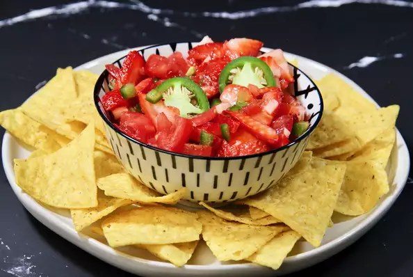

Strawberry Salsa

Description
A sweet salsa that is great with pork and chicken dishes or as a nacho dip
- 1 pint fresh strawberries, sliced
- 4 roma tomatoes, chopped
- 1 jalapeno peppers
- 2 cloves garlic
- 1 lime, juiced
- 1 tbsp olive oil
Method
- In a large bowl, combine strawberries, tomatoes, chile peppers, garlic, lime juice and oil. Toss all together to
mix and coat. Cover dish and refrigerate for 2 hours to chill. Ready to serve!